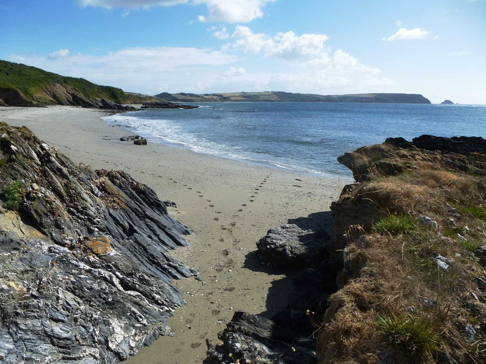
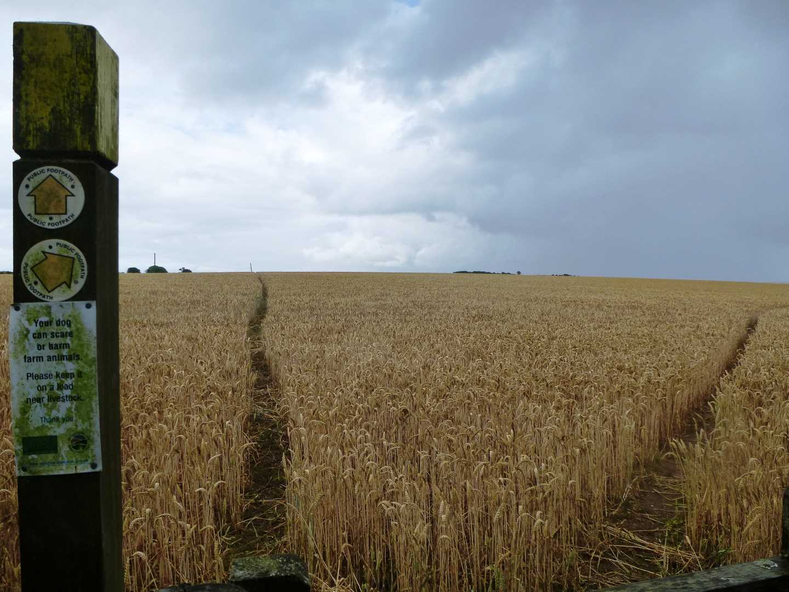

Start Ref: 897 383
End Ref: 897 383
Distance: 6 miles
Time: 3hrs
We leave our car in the National Trust car park at Pendower Beach, and almost immediately are confronted with our first decision. Do we sit on the beach or go for a walk? I have done both, several times.
If the walk decision has won, then we are going to walk towards the old hotel (where there is now a cafe) and up the hill to where we could park for free. Follow this road up and around until we are above Pendower Court. On the far side of this private residence, there is a public footpath on our left, which leads us down through a swinging footpath gate and then on down towards the coast. NOTE.. Our return footpath will bring us back to this swinging gate.
As the footpath swings right to follow the coast around to Portscatho, we find ourselves in a landscape that looks like it could have been fields but is now overtaken by bracken. This area is known as Treluggan Cliffs and we are likely to find the ponies roaming free that have been brought in to graze this bracken to encourage a wider range of wildlife.
After following the coast for about a mile we come to Creek Stephen Point, at which point we find a gate off to our left which is the private `harbour` of Curgurrell, we are going to pass this gate and carry on to the little footbridge over the stream and then back up the little rise on the far side.
Over a few more fields and then we come to a point where we are given several options of direction. We need to take the left hand branch of the path and head down to the beach (Porthbean Beach) as the footpath runs along the top of this beach and is exited by a relatively steep set of steps and a path, the top of which turns left through a gate to bring us back into fields. However, you may (like myself) want to stop and enjoy the seclusion of this golden beach. Once back in the fields we again follow the coast and are soon given glimpses of the Lookout Station at Pednvadan from where we have views of both Portscatho and the nearer Porthcurnick Beach. Porthcurnick is the home of the now famous Hidden Hut, and is very good for refreshments.
Once we have sat on the beach, or had a drink, we need to look at the return leg of our walk. To do this we are going to use the road which runs down to the beach (heading North) and follow this on a steadily rising journey for about a mile, until we reach a sharp left in the road and the signpost to Curgurrell Farm (on our right). At this point we can go through the gate opposite us and into the field as we pick up the footpath again. Follow the left edge of the field up through another gate and then diagonally across the next field to where there is a stile in the hedge. Once over this stile, the path has two options (straight ahead or slightly off to the right), we are going to take the right hand path and this will take us slowly back towards the coast (but not quite).
About half way across this field we can look back at Portscatho, as we then find ourselves coming to a gate in the hedge with an odd shaped granite wedge (about 3ft high) between the two gates! Through the gates and passing the wedge we are now back at the top of Treluggan Cliffs as the footpath slowly draws together with the lower coastal path, until we stoop under some trees and find ourselves back by the swinging gate near Pendower Court.
Here, turn left to walk back to the road and then right to bring ourselves back down to Pendower Beach and our car.
I hope that you will enjoy this walk.